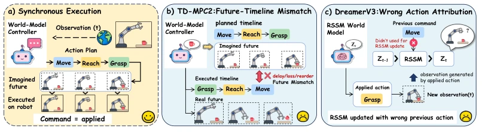
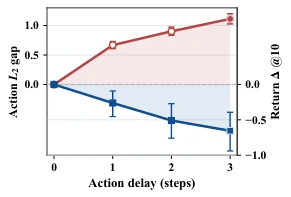
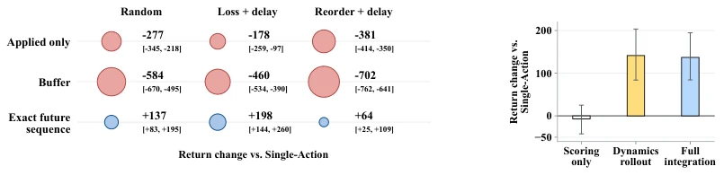
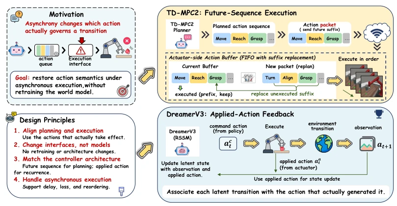
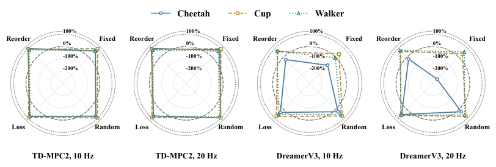
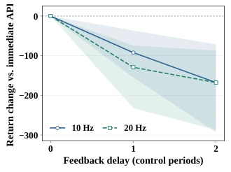
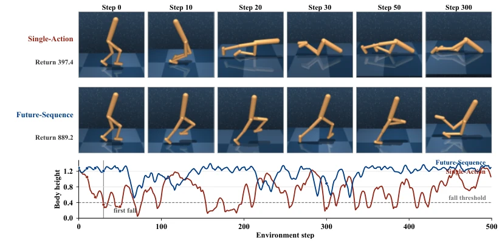

This paper does not focus on large models, but concentrates on the pain point of "execution semantic mismatch". World model control appears perfect but cannot withstand the test of network jitter. TD-MPC2 and DreamerV3 collapse in asynchronous environments, not because the models are inadequate, but because they assume command equals execution. The authors did not retrain the model but implemented two lightweight interfaces, one transmitting future sequences and one transmitting actual actions. Although it does not solve all latency issues, it is superior to simple latency compensation. However, does this approach have a bit of a "patching" flavor? After all, without changing the model architecture, generalizability is questionable. Moreover, experiments are mainly in simulation environments, with limited real robot verification, belonging to the typical "works in simulation, luck in reality".
研究动机Motivation
现有工作多把延迟当外部扰动，用状态增广或延迟补偿（Chen et al., 2021; Wikman et al., 2026）。但世界模型控制器依赖动作条件预测，异步执行导致“命令”与“实际施加”不一致。这不仅是扰动，更是语义错位。TD-MPC2 假设未来动作序列，DreamerV3 假设上一动作生成观测。现有方法（Katsikopoulos & Engelbrecht, 2003）恢复马尔可夫性，但没解决动作语义内部计算的问题。Hafner et al., 2024 的 Dreamer 系列假设同步，一旦异步，RSSM 更新就会错配。Prior work 忽略了动作条件预测模型内部的语义依赖，导致控制性能在异步下显著下降。
Existing work mostly treats latency as external disturbance, using state augmentation or latency compensation (Chen et al., 2021; Wikman et al., 2026). But world model controllers rely on action-conditioned prediction; asynchronous execution leads to inconsistency between "command" and "actual application". This is not merely disturbance, but semantic misalignment. TD-MPC2 assumes future action sequences, DreamerV3 assumes previous action generates observation. Existing methods (Katsikopoulos & Engelbrecht, 2003) restore Markovianity but do not solve the problem of internal action semantic calculation. Hafner et al., 2024's Dreamer series assumes synchronization; once asynchronous, RSSM updates will mismatch. Prior work ignores semantic dependencies inside action-conditioned prediction models, leading to significant decline in control performance under asynchronous conditions.

Figure 1: (a) Synchronous execution keeps commanded and applied actions aligned. Under asyn- chronous execution, (b) TD-MPC2 suffers from future-action timeline mismatch, while (c) Dream- erV3 can suffer from previous-action attribution mismatch.

Figure 2: Effect of execution delay under fixed commands. Error bars denote 95% confidence intervals.
Proposes Execution Consistent Interface (ECI). The pipeline is divided into controller and executor ends. For TD-MPC2 (planning-based), Future-Sequence Execution is adopted, passing future action suffixes generated by planning to the executor buffer, ensuring action timelines match execution during dynamics rollout. The executor maintains a FIFO buffer; newly arrived planning sequences will replace unexecuted suffixes, preventing old plans from overwriting. For DreamerV3 (recurrent-based), Applied-Action Feedback is adopted; the executor returns actual applied actions, replacing command actions during RSSM updates. The executor returns actual actions or identifiers with observations via Execution Receipt, requiring no extra communication rounds. The core is not changing pre-trained model weights, only adjusting interface data flow. This method preserves the planner's future information or corrects recurrent state updates, directly targeting the two failure modes found in the paper.

Figure 3: TD-MPC2 execution-information ablations. Left: information type across perturbations. Right: insertion point. Brackets and error bars denote 95% CIs.

Figure 5: Overview of our execution-consistent world-model control framework.
Tested on DeepMind Control Suite and MetaWorld, etc. Baselines include Single-Action, Hold-Last, DATS, etc. Metrics are Return and Success Rate. Results show Future-Sequence outperforms Receding Buffer under packet loss; Applied-Action Feedback shows significant improvement under random latency. Ablation studies prove temporal alignment is crucial (Fig 8). In the Walker task, Future-Sequence recovery rate under packet loss is significantly higher than baselines. For DreamerV3 under random latency, Applied-Action Feedback improves about 13% over Command Feedback. Figure 9 shows Walker stability comparison under packet loss reordering; Future-Sequence stays upright while the baseline falls. The process-separated asynchronous stack verifies deployment feasibility.

Figure 7: Lost return recovered in the asynchronous stack. From left: TD-MPC2 at 10/20 Hz, then DreamerV3 at 10/20 Hz. Dashed and dotted rings mark 0% and 100% recovery. All panels share a radial scale starting at -300%; negative values indicate further degradation.

Figure 8: Feedback latency under ran- dom delay. Shading: 95% CI.

Figure 9: Paired Walker-Walk rollout under packet reordering.